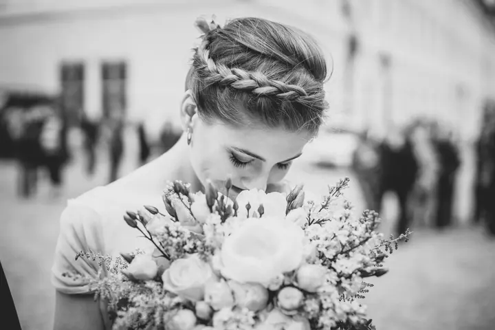
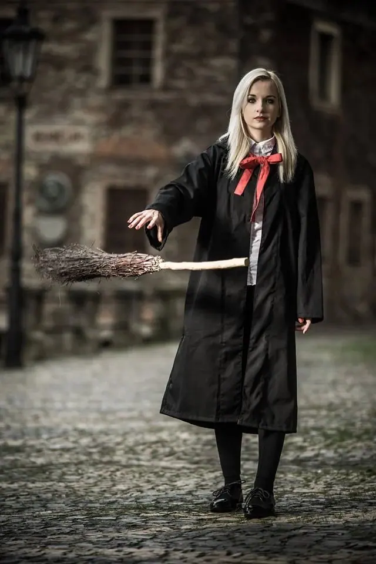
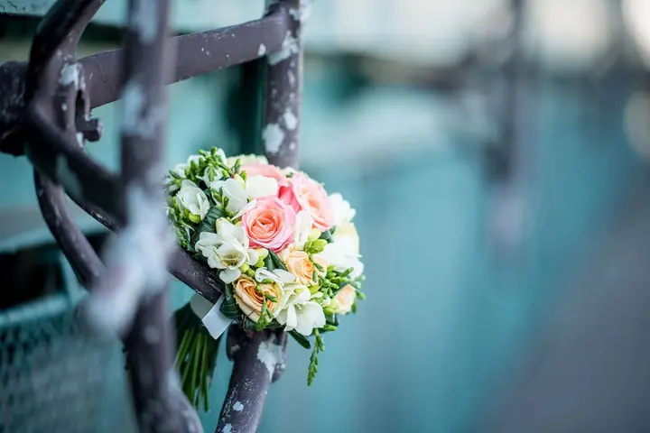

Svatby
Fotím jen obřad, půl dne, celý den od příprav po tanec nebo balíček Exclusive na 10 až 12 hodin. Vyprávím příběh vašeho dne, ať se berete v chrámu, na zámku nebo na louce.





Jmenuji se Jan Strnad a svatby fotím už 20 let. Z ateliéru v Kolíně za vámi přijedu na louku, na hory, do chrámu i na zámek. Budu s vámi od příprav až po první tanec.
Více o mně
„Budu vyprávět příběh Vašeho dne na svých fotografiích.“
— Jan Strnad
Fotím jen obřad, půl dne, celý den od příprav po tanec nebo balíček Exclusive na 10 až 12 hodin. Vyprávím příběh vašeho dne, ať se berete v chrámu, na zámku nebo na louce.
Předsvatební focení, při kterém mě poznáte a vyzkoušíte si, jaké je stát před objektivem. Stojí 3 000 Kč a dostanete 10 retušovaných fotografií 13x19.
Přivezu na svatbu fotoateliér s obsluhou a fotky tisknu hned na místě. Hosté se pobaví a domů si odnesou památku.
Fotím koncerty, taneční vystoupení a společenské akce. Zachytím atmosféru na pódiu i v sále.
Jmenuji se Jan Strnad a svatební fotografii se věnuji 20 let. Za tu dobu jsem nafotil stovky svateb, malých i velkých, romantických na louce i slavnostních v zámku. Pokaždé se snažím vyprávět příběh vašeho dne tak, jak opravdu proběhl.
Zakládám si na přátelském a individuálním přístupu. Rád vám pomůžu i s organizací svatby a nabízím kompletní servis od předsvatebního rande přes celý den až po fotoknihu. Fotím na špičkové objektivy Sony G-Master a fotografie vám většinou dodám do 14 dnů.
Kromě svateb fotím i koncerty, taneční vystoupení a další akce. Můj ateliér najdete v Kolíně v Jaselské ulici, ale za páry jezdím po celé republice.
Zavolejte, napište e-mail nebo rovnou vyplňte svatební dotazník. Domluvíme termín a vybereme balíček, který vám sedí.
Na předsvatebním focení se poznáme a zjistíte, jak se vám se mnou fotí. Odnesete si 10 retušovaných fotografií a hezkou vzpomínku.
Podle zvoleného balíčku jsem s vámi při obřadu nebo celý den od příprav po zábavu. Pomohu i s organizací skupinových fotek.
Fotografie vám většinou dodám do 14 dnů. Dostanete retušované tisky 13x19 a všechny fotky na nosiči nebo ve webové galerii.
Focení obřadu začíná na 7 000 Kč, půl dne na 12 000 Kč, celý den na 18 000 Kč a balíček Exclusive na 29 000 Kč. Přesnou cenu vám rád spočítám podle vaší svatby.
Fotografie vám většinou dodám do 14 dnů od svatby.
Ano, fotím po celé republice. Dopravu do 50 km mám zdarma, v balíčku Exclusive do 100 km, takže třeba Praha, Hradec Králové, Pardubice, Kutná Hora nebo Poděbrady vás nic navíc nestojí.
Přivezu ateliér s obsluhou a fotky tisknu na místě. Dvě hodiny s přibližně 100 fotografiemi 15x20 stojí 8 000 Kč, každá další hodina 2 000 Kč. Ateliér lze přiobjednat k balíčku půl dne a vyšším.